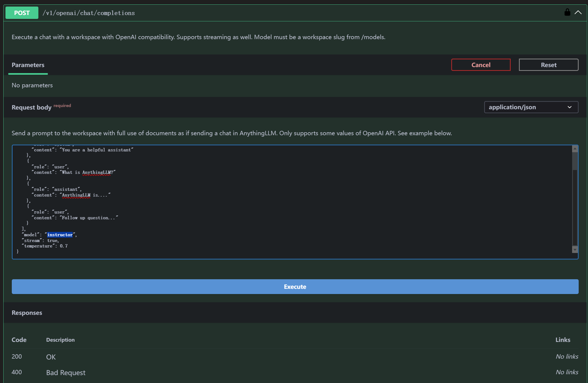

Unity GPT Test¶
Try some interesting things with Unity and GPT, and most importantly: Learning!
······················································································
:██████╗ ██╗ ██╗███╗ ██╗███╗ ██╗██╗ ██╗ ██████╗██╗ ██╗███████╗███╗ ██╗:
:██╔══██╗██║ ██║████╗ ██║████╗ ██║╚██╗ ██╔╝ ██╔════╝██║ ██║██╔════╝████╗ ██║:
:██████╔╝██║ ██║██╔██╗ ██║██╔██╗ ██║ ╚████╔╝ ██║ ███████║█████╗ ██╔██╗ ██║:
:██╔══██╗██║ ██║██║╚██╗██║██║╚██╗██║ ╚██╔╝ ██║ ██╔══██║██╔══╝ ██║╚██╗██║:
:██████╔╝╚██████╔╝██║ ╚████║██║ ╚████║ ██║ ╚██████╗██║ ██║███████╗██║ ╚████║:
:╚═════╝ ╚═════╝ ╚═╝ ╚═══╝╚═╝ ╚═══╝ ╚═╝ ╚═════╝╚═╝ ╚═╝╚══════╝╚═╝ ╚═══╝:
······················································································
介绍¶
Unity项目文件在：Lizhenghe-Chen/Unity-GPT-Test
平台支持（未测试则留空）：
| Android | iOS | Windows | macOS | linux | HarmonyOS | WebGL |
|---|---|---|---|---|---|---|
| ✅ | ✅ | 🚫 |
AI+游戏恐怕在所难免，虽然现在没有成熟的技术和解决方案来时间GPT和游戏的深度融合，但是探索的脚步无法阻挡，所以尝试用相对简单的方式实现Unity+GPT的一些功能：
- 在Untiy内实现和ChatGPT或本地大模型的文字对话
- 在Untiy内实现和ChatGPT或本地大模型的文字对话+实现语音交流
- 实现GPT控制游戏内场景
- 数字人（动作、表情、唇动、TTS和STT）
- GPT控制游戏内角色行动
- 。。。
部署GPT¶
接口规范¶
这里使用 [OpenAI API chat 的统一规范格式][https://platform.openai.com/docs/api-reference/chat/create)，大部分模型和平台都有这个接口规范的：
通过POST的方式发送规范的Json格式请求到指定服务器，并接受返回的结果即可
json格式：
curl https://api.openai.com/v1/chat/completions \
-H "Content-Type: application/json" \
-H "Authorization: Bearer $OPENAI_API_KEY" \
-d '{
"model": "gpt-4o",
"messages": [
{
"role": "system",
"content": "You are a helpful assistant."
},
{
"role": "user",
"content": "Hello!"
}
]
}'
任何时候都需要：
- url：服务器地址
- model：模型名字
-
messages：发送的请求类型和内容：
-
system：- 作用 ： System 角色用于提供通知模型行为的设置信息或上下文。这可能包括有关对话应如何进行的说明或指南。
- 何时使用 ：您可以使用此角色为交互设置阶段。例如，如果您希望模型在整个对话中保持正式的语气，或者如果您需要指定规则（例如避免某些话题）。
-
user： -
作用 ： 此角色代表对话中的人类用户。来自用户的输入将指导对话并提示助手的响应。
- 何时使用 ：每当人类用户发表声明或提出问题时。这是标准交互中最常用的角色。
-
agent： -
功能简介 ：这是模型本身的作用，根据系统设置的上下文响应用户输入。
-
- 何时使用 ：当模型回复用户的查询或遵循系统的指示时，模型会自动代入此角色。
大语言模型平台（LLM）¶
以下任意一种平台均可使用统一的OpenAI规范接口，所以都只用更改网址、API Key和model名称即可！
- 如果你使用ChatGPT，那么就很简单了，直接用上面的接口格式就行，只需要API key 和模型名称即可：如在控制台中输入：
ollama run qwen2.5即可下载运行千问大模型 -
如果使用Ollama部署本地大模型：
-
同样可以使用Open AI规范的形式，参考：[OpenAI compatibility · Ollama Blog][https://ollama.com/blog/openai-compatibility)
- 只要下载并部署好Ollama并安装好指定的模型即可
- 常用的Ollama环境变量设置（[Global Configuration Variables for Ollama][OllamaGlobalConfiguration.md)）：
OLLAMA_ORIGINS: 允许的来源，用于跨域请求，如果遇到（CORS）问题，可以设置变量为*OLLAMA_MODELS: 指定模型下载存储路径，默认是$HOME/.ollama/modelsOLLAMA_HOST: 服务器端口地址，默认是http://127.0.0.1:11434OLLAMA_KEEP_ALIVE: 模型激活后的保持时间，默认是5分钟，这会在加载大体量模型但常用的时候每一次请求都要重新加载模型，所以可以设置一个较长的时间如5h
-
如果使用AnythingLLM搭建本地知识库
-
确保Ollama已经安装
- 下载安装[Download AnythingLLM for Desktop][https://anythingllm.com/download)
- 然后简单的配置好，指定Ollama为内核即可
- 为了能够像OpenAI那样使用网络API接口，在 设置>工具>API密钥 里申请一个密钥，然后点击“阅读API文档”，点击“Authorize”将密钥复制进去就可以测试接口了：
- 在你创建完一个workspace后，就可以查阅模型名称：
- 将查阅的模型名称输入到聊天API中测试： 
- 之后你只需要将上述特定的json数据请求格式发送到：
{kind=link}
{kind=link}
然后就是Unity C#代码的简单解析：¶
处理发送信息¶
这个连接可以帮助你理解：[聊天接口 /v1/chat/completions - API2D][https://api2d-doc.apifox.cn/)
为了通过规范且整洁的方式生成json信息，我们通过创建C# Class的Object并通过Newtonsoft. Json强制转换为json格式:JsonConvert.SerializeObject())
private SimpleOpenAIRequest SetupSimpleRequest()
{
var userRequest = new SimpleOpenAIRequest
{
Model = config.modelSettings.model,
Stream = config.modelSettings.useStream,
Temperature = config.modelSettings.temperature,
Messages = new List<Message>()
};
return userRequest;
}
具体的数据结构设置在脚本：[ SimpleOpenAIRequest.cs][Assets/GPTModule/Scripts/OpenAIChatGPT.cs) 然后生成的具体脚本在：[ OpenAIChatGPT.cs][Assets/GPTModule/Scripts/OpenAIChatGPT.cs)
网络协议的请求格式：
/// <summary>
/// 生成OpenAI请求
/// </summary>
/// <returns> 返回一个UnityWebRequest对象 </returns>
private UnityWebRequest GenerateOpenAIRequest()
{
//convert the data to JSON，注意这里的ToLower()，因为OpenAI的API对大小写敏感，如果Class的属性名是大写，会导致请求失败
var jsonString = JsonConvert.SerializeObject(_simpleOpenAIRequest).ToLower();
var request = new UnityWebRequest(config.url, "POST");
var bodyRaw = System.Text.Encoding.UTF8.GetBytes(jsonString);
request.uploadHandler = new UploadHandlerRaw(bodyRaw);
request.downloadHandler = new DownloadHandlerBuffer();
request.SetRequestHeader("Content-Type", "application/json");
request.SetRequestHeader("Authorization", "Bearer " + config.apiKey);
request.certificateHandler = new ChatGptWebRequestCert();
Debug.Log("<color=orange>Request: </color>" + jsonString);
onSend.Invoke(); // Event to show that the request is being sent
return request;
}
处理接受信息¶
gpt的回调也是Json形式，同样可以把他们再转会C#的数据格式
所以最后的收发核心代码为：
/// <summary>
/// <param name="prompt"> The text to send to the GPT model </param>
/// <param name="callback"> The callback function to be called when the response is received,
/// leave it null if you don't need a callback </param>
/// <returns></returns>
/// </summary>
private IEnumerator GetChatGptResponse(string prompt, Action<string> callback = null)
{
SetUserRequest(prompt);
var request = GenerateOpenAIRequest();
yield return request.SendWebRequest();
if (request.result is UnityWebRequest.Result.ConnectionError or UnityWebRequest.Result.ProtocolError)
{
Debug.LogError("Error: " + request.error);
}
else
{
Debug.Log("<color=green>Respond: </color>" + request.downloadHandler.text);
var responseText = request.downloadHandler.text;
//Debug.Log("Response: " + responseText);
// Parse the JSON response to extract the required parts
var response = JsonConvert.DeserializeObject<OpenAIResponse>(responseText);
callback?.Invoke(response.Choices[0].Message.Content);
latestResult = response.Choices[0].Message.Content;
onTextUpdate.Invoke();
onComplete.Invoke();
}
}
具体细节还请参考：[OpenAIChatGPT.cs][Assets/GPTModule/Scripts/OpenAIChatGPT.cs)
Unity中配置：¶
GPT相关的配置设置都放在[ GPTConfig.cs][Assets/GPTModule/Scripts/GptModuleConfig.cs)中，这个类主要是用来设置GPT的一些参数，如API Key、模型名称、请求地址等等，在Unityinspector中附在[ OpenAIChatGPT.cs][Assets/GPTModule/Scripts/OpenAIChatGPT.cs)组件物体上:
{kind=link}